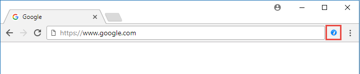
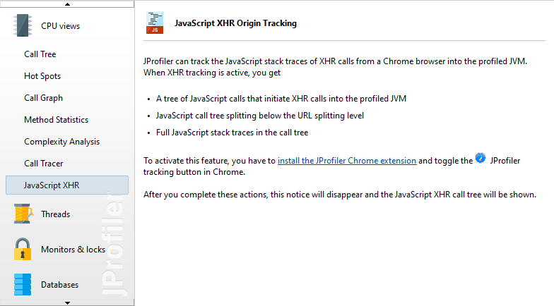
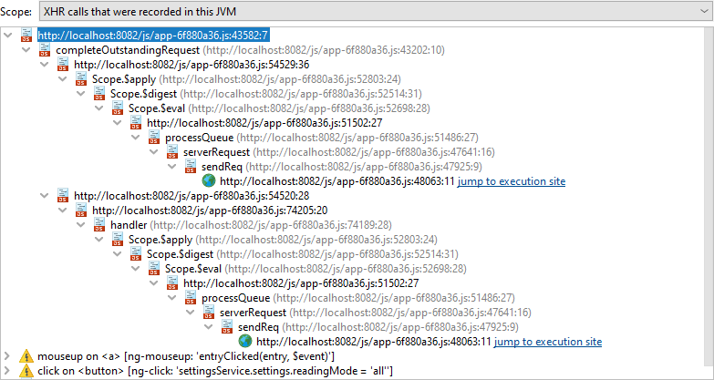
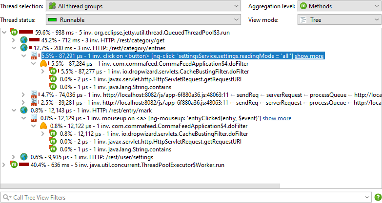
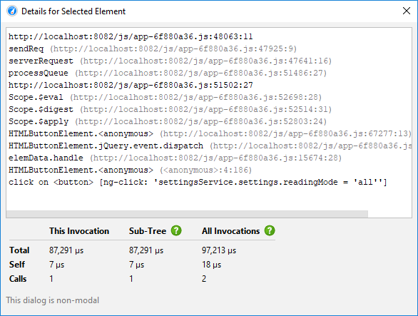

With JavaScript XHR origin tracking, you can split servlet invocations for different stack traces in the browser during XMLHttpRequest or Fetch requests, so you can better correlate the activity in the profiled JVM with actions in the browser. in the following, "XHR" designates both the XMLHttpRequest and the Fetch mechanisms.
Browser plugin
To use this feature, you have to use Google Chrome as the browser and install the JProfiler origin tracker extension.

The Chrome extension adds a button with a JProfiler icon to the tool bar that starts tracking. When you start tracking, the extension will intercept all XHR calls and report them to a locally running JProfiler instance. As long as tracking has not been started, JProfiler will show an information page that tells you how to set up JavaScript XHR origin tracking.

When tracking is activated, the JProfiler extension will ask you to reload the page. This is necessary for adding instrumentation. If you choose to not reload the page, event detection may not work.
The tracking status is persistent on a per-domain basis. If you restart the browser while tracking is active and visit the same URL, tracking will automatically be enabled, without the need to reload the page.
JavaScript XHR tree
If the XHR calls are handled by a JVM that is profiled by an active profiling session in JProfiler, the JavaScript XHR view will show a cumulated call tree of these calls. If the view remains empty, you can switch the "Scope" at the top of the view to "All XHR calls" to check if any XHR calls have been made.

Javascript  call stack nodes include information
on the source file and the line number. The function where the XHR call is made has a
special icon and and adjacent
hyperlink in case the XHR call was handled by the profiled JVM. The hyperlink will take you to the
Javascript splitting node in the call tree view where you can
see the server side call tree that was responsible for handling requests of this type.
call stack nodes include information
on the source file and the line number. The function where the XHR call is made has a
special icon and and adjacent
hyperlink in case the XHR call was handled by the profiled JVM. The hyperlink will take you to the
Javascript splitting node in the call tree view where you can
see the server side call tree that was responsible for handling requests of this type.
At the top of the tree you find browser event nodes that show event name and element name together with important attributes that help you pin down the source of the event. Not all requests have an associated event.
The extension is aware of several popular JavaScript frameworks and walks the ancestor hierarchy between the
target node of an event up to the node where the event listener is located, looking for attributes that are
suitable for display and splitting the call tree. Failing to find framework-specific attributes, it stops at
an id attribute. In the absence of an ID, it searches for "control elements" like a,
button or input. All failing, the element where the event listener is registered
will be shown.
In some cases, the automatic detection of interesting attributes may not be suitable and you may prefer a different call tree splitting. For example, some frameworks assign automatic IDs, but it would be more readable to group all elements together with a semantic description of the action. To achieve a different call tree splitting, add the HTML attribute
data-jprofiler="..."
to the target element or an element between the target and the location of the event listener. The text in that attribute will be used for splitting and other attributes will be ignored.
Call tree splitting
In the call tree view, XHR calls will split the call tree for each separate combination of browser event
and call stack. The splitting nodes
show information about the browser event. If no event is in progress, like in a call to setTimeout(),
the last few stack frames are displayed inline.

The "show more" hyperlink on these nodes opens the same detail dialog that is opened by the View->Show Node Details action. For JavaScript splitting nodes, the detail dialog does not show the text of the node, but the entire browser call stack. To inspect the call stack of other JavaScript splitting nodes, leave the non-modal detail dialog open and click on those nodes, the detail dialog will update its contents automatically.
